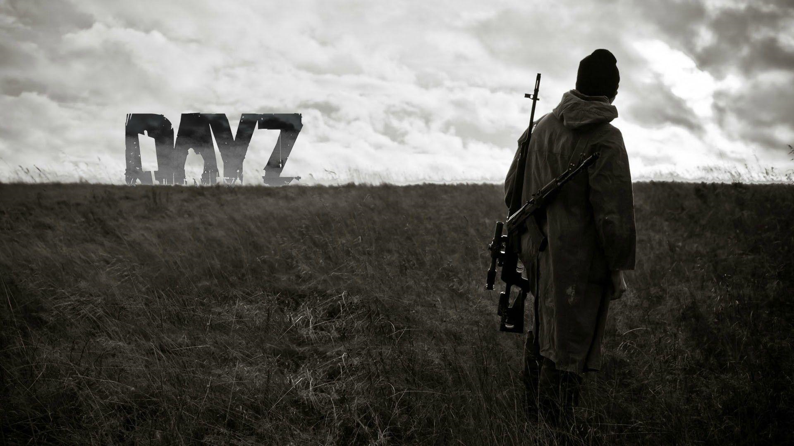
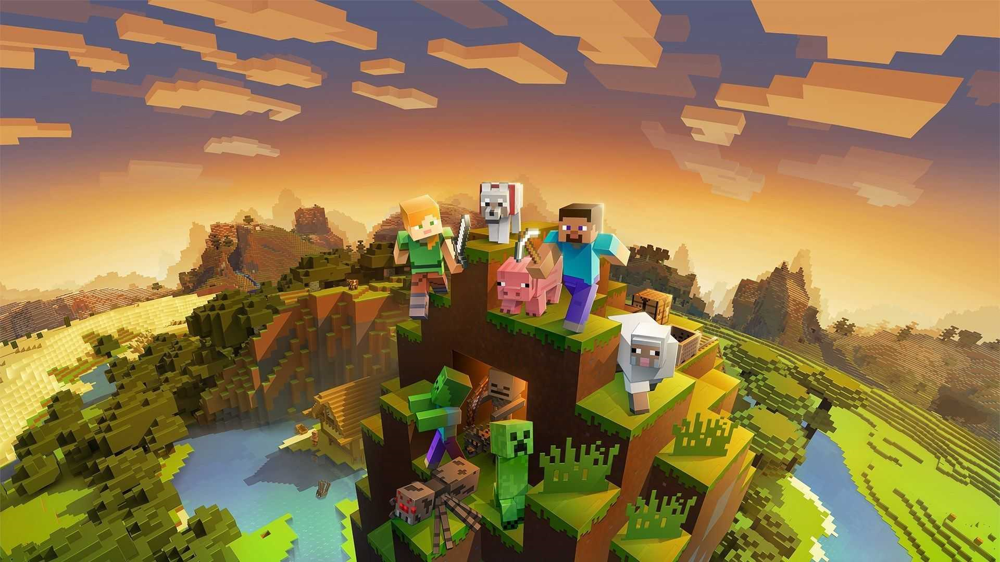

BEST SURVIVAL GAMES
Scum

Scum is an upcoming multiplayer online survival game, developed by Croatian studio Gamepires, available under the Steam Early Access program. The game is described as a "prison riot survival game" and will feature an open world.It entered Steam's early access program on 29 August 2018, with a full release scheduled for sometime in 2021. The game uses Unreal Engine 4. The gameplay takes place in Croatia where up to 100 players per server will attempt to survive and get off the island by first removing the implant which prevents them from leaving. The player will earn fame points through participation in various action-driven events or simply by surviving in a hostile environment. These fame points allow the player to be cloned back in case of death, and used as currency to purchase or trade in various safe zones. Players will be able to fortify existing structures and points in order to secure positions or store items when needed. [Reference] [Where to find]
Dayz
DayZ is a survival video game developed and published by Bohemia Interactive. It is the standalone successor of the mod of the same name for the game ARMA 2. Following a five-year long early access period for Windows, the game was officially released in December 2018, and was released for the Xbox One and PlayStation 4 in 2019. The game places the player in the fictional post-Soviet Republic of Chernarus, where a mysterious plague has turned most of the population into violent "infected". As a survivor, the player must scavenge the world for food, water, weapons, and medicine, while killing or avoiding the infected, and killing, avoiding, or cooperating with other players in an effort to survive the outbreak. DayZ began development in 2012 when the mod's creator, Dean Hall, joined Bohemia Interactive to commence work on the standalone version of the game. The development has been focused on altering the engine to suit the game's needs, developing a working client-server architecture, and introducing new features like diseases and a better inventory system. The game sold over three million copies during its early access phase. [Reference] [Where to find]
Don't Starve

Don't Starve is a survival video game developed by the Canadian indie video game developer Klei Entertainment. The game was initially released for Microsoft Windows, OS X, and Linux on April 23, 2013. A PlayStation 4 port, renamed Don't Starve: Giant Edition, became available the following year (with PlayStation Vita and PlayStation 3 versions released on September 2014 and June 2015 respectively, and an Xbox One version released in August 2015). Don't Starve for iOS, renamed Don't Starve: Pocket Edition was released on July 9, 2015. An Android version was released on October 20, 2016. Downloadable content titled Reign of Giants was released on April 30, 2014, and a multiplayer expansion called Don't Starve Together became free for existing users on June 3, 2015. On Steam, this game is able to be purchased with a free copy for a friend. A Nintendo Switch port came out on April 12, 2018. [Reference] [Where to find]
Minecraft
Minecraft is a sandbox video game developed by the Swedish video game developer Mojang Studios. The game was created by Markus "Notch" Persson in the Java programming language. Following several early private testing versions, it was first made public in May 2009 before fully releasing in November 2011, with Jens Bergensten then taking over development. Minecraft has since been ported to several other platforms and is the best-selling video game of all time, with over 200 million copies sold and over 140 million monthly active users as of 2021. In Minecraft, players explore a blocky, procedurally-generated 3D world with virtually infinite terrain, and may discover and extract raw materials, craft tools and items, and build structures or earthworks. Depending on game mode, players can fight computer-controlled mobs, as well as cooperate with or compete against other players in the same world. Game modes include a survival mode, in which players must acquire resources to build the world and maintain health, and a creative mode, where players have unlimited resources and access to flight. Players can modify the game to create new gameplay mechanics, items, and assets. [Reference] [Where to find]
Tribes of Midgard

Tribes of Midgard is an action role-playing survival game played from an isometric perspective. In addition to solo play, players can also form a tribe of 10 players and play cooperatively. In the game, the player assumes control of an Einherjar, a Viking hero who must protect the seed of Yggdrasil from enemies such as Helthings, dark elves, trolls and giants. During day time, the player explores a procedurally generated world, collecting resources used for crafting new weapons, armor, and village defenses. At night time, the enemies will attack the player's settlement in an attempt to destroy the seed of Yggdrasil, and players need to collect the souls of the enemies in order to sustain the seed's life. With each day survived, the enemies in the game will become stronger and more difficult to defeat. The game features eight different gameplay classes, and each class has their own unique combat abilities. The player may also collect runes, which further modify their stats and attributes. The game features two main modes: the story-driven Saga mode, and the more open-ended survival mode. [Reference] [Where to find]